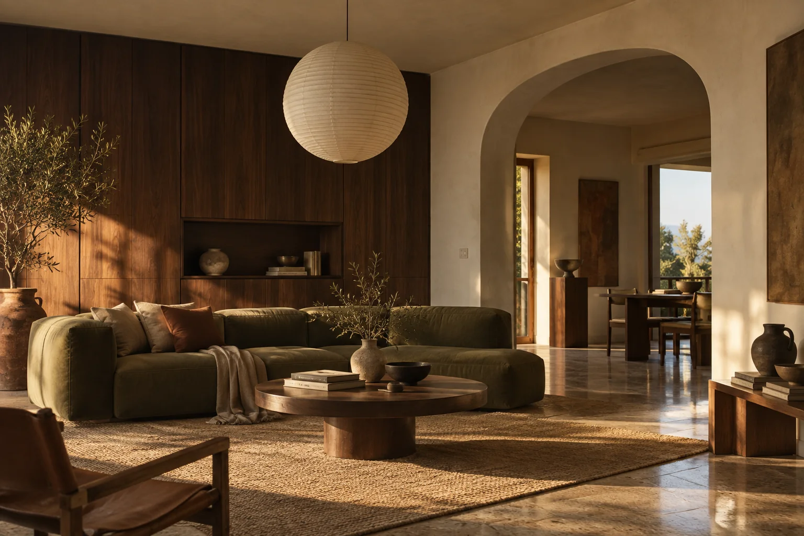
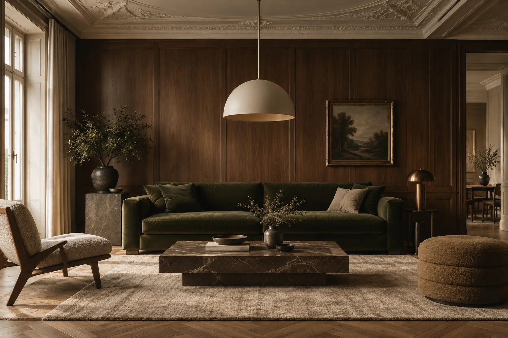
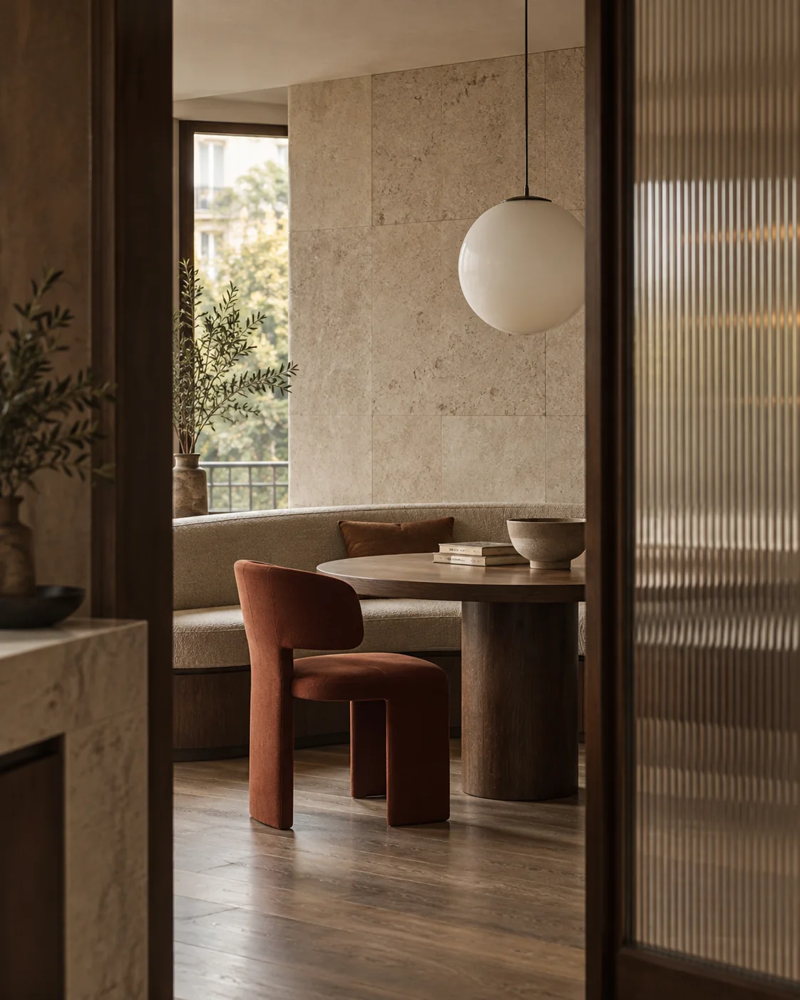
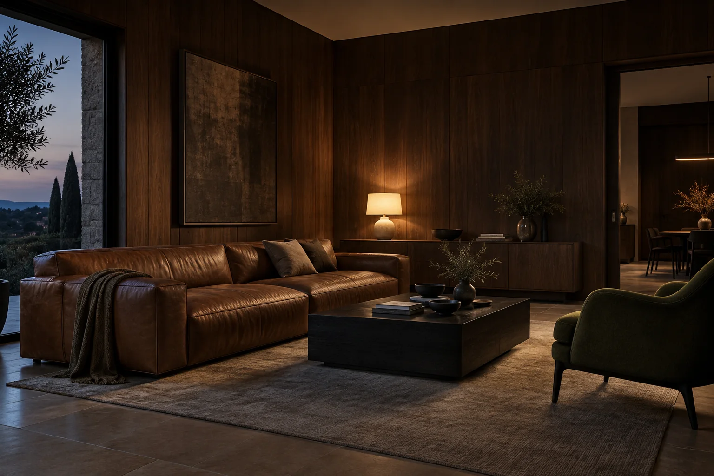
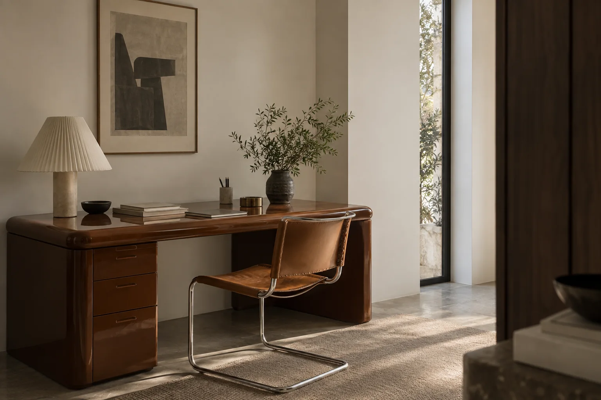

Ascoltare prima di disegnare

Abitudini, desideri e vincoli diventano la base concreta delle scelte.

Spazi da abitare.
Dettagli da ricordare.
Interni residenziali e luoghi condivisi, progettati intorno alle persone e a ciò che rende unico ogni luogo.
Parliamo del tuo progettoLo studio
ROUND è uno studio di interior design. Lavoriamo su proporzioni, uso e atmosfera per dare forma a spazi che restano.

Ogni progetto comincia da una domanda semplice: come deve sentirsi chi vivrà qui?

Abitudini, desideri e vincoli diventano la base concreta delle scelte.
Pianta, luce e arredi lavorano insieme, senza elementi lasciati al caso.

Materiali sinceri e dettagli durevoli danno profondità agli ambienti.
Progetti selezionati
Il processo
Ascoltiamo necessità e abitudini, leggiamo lo spazio e definiamo le priorità.
Distribuzione, luce, arredi e materiali prendono forma in un’unica direzione.
Disegni, campioni e dettagli accompagnano il progetto fino alla consegna.
Servizi
Dal layout agli arredi su misura: definiamo funzioni, proporzioni, luce e atmosfera di ogni ambiente.
Studiamo flussi, distribuzione e carattere degli spazi prima di entrare nel dettaglio esecutivo.
Selezioniamo finiture, luci e pezzi d’arredo, affiancandoli a elementi disegnati su misura.
Il nostro modo di lavorare
Un interno riuscito rende semplici i gesti di ogni giorno e lascia spazio a nuove abitudini.ROUND Studio
Domande frequenti
Il percorso può riguardare un interno completo, un singolo ambiente o la selezione di arredi e materiali.
Valutiamo il luogo, le esigenze e le attività richieste, poi costruiamo un percorso proporzionato al progetto.
Prima di fissare il layout o acquistare arredi: così possiamo costruire una direzione coerente fin dall’inizio.
Sì, il perimetro del lavoro può concentrarsi su una stanza o su un'esigenza specifica.
Parliamone

Una casa da ripensare, uno spazio da aprire, un progetto ancora all’inizio: bastano poche informazioni per iniziare una conversazione.
Raccontaci il progetto